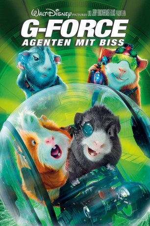

gesehen am 29.06.2015
gesehen am 29.06.2015Alternativ: G-Force gesehen am 29.06.2015
 
 IMDB-Wertung: 5.1 / 10
IMDB-Wertung: 5.1 / 10  Metascore:
Metascore: 
Darwin, Blaster und Suarez sind Agenten - allerdings keine normalen Agenten, denn dafür sind sie viel zu klein und haarig. Aber so ist das eben mit Meerschweinchen, denen man in einem FBI-Forschungslabor Übersetzungsmodule verpasst, damit sie mit Menschen kommunizieren können. Die Feuerprobe des Teams - das vom Maulwurf Speckles und der Stubenfliege Mooch ergänzt wird - besteht in der Infiltrierung des Küchengeräteherstellers Saber Industries. Dort soll die Crew Dateien von einem Computer stehlen. Die Tiere decken bei diesem ersten Einsatz eine Verschwörung namens "Cluster Storm" auf: In sämtlichen Kaffeemaschinen, Mikrowellen und Kühlschränken von Saber Industries verbergen sich hochgerüstete Kampfmaschinen, die die Menschheit zu vernichten drohen. Doch die G-Force kann das FBI nicht von der akuten Gefahr überzeugen. Schlimmer noch: Die Behörde plant die Auflösung der tierischen Einheit...
Jahr: 2009
Dauer: 88 Minuten
FSK: 6
Land: USA Studio: Walt Disney Studios Motion PicturesTonspuren:
Untertitel: Deutsch,
Auflösung: 720p (1280x528) Größe: 4474 MB
Genre: Animation/Trick, Action, Abenteuer, Komödie, Familie, Fantasy, Sci-Fi
Regisseur: Hoyt Yeatman
Drehbuch: Cormac Wibberley, Marianne Wibberley, Hoyt Yeatman, David P.I. James
Soundtrack: Trevor Rabin
Darsteller:
 Bill Nighy als Saber
Bill Nighy als Saber Will Arnett als Kip Killian
Will Arnett als Kip Killian Zach Galifianakis als Ben
Zach Galifianakis als Ben Kelli Garner als Marcie
Kelli Garner als Marcie Jack Conley als Agent Trigstad
Jack Conley als Agent Trigstad Niecy Nash als Rosalita
Niecy Nash als Rosalita Loudon Wainwright III als Grandpa Goodman
Loudon Wainwright III als Grandpa Goodman Chris Ellis als FBI Director
Chris Ellis als FBI Director James Huang als Agent
James Huang als Agent Mini Anden als Saber's Assistant
Mini Anden als Saber's Assistant Nicolas Cage als Speckles
Nicolas Cage als Speckles Sam Rockwell als Darwin
Sam Rockwell als Darwin Jon Favreau als Hurley
Jon Favreau als Hurley Penélope Cruz als Juarez
Penélope Cruz als Juarez Steve Buscemi als Bucky
Steve Buscemi als Bucky Dee Bradley Baker als Mooch
Dee Bradley Baker als Mooch Vincent De Paul als Mr. Bates , uncredited
Vincent De Paul als Mr. Bates , uncreditedDatei: X:\Kinder Disney HD\2000-2018\G-Force - Agenten mit Biss (2009, FSK6, 1280x528).mkv seit 24.06.2015
Festplatte: Kinder-Filme+Trick
 Es gibt insgesamt 45 Filme in der Gruppe 'Kinder Disney HD\2000-2018'
Es gibt insgesamt 45 Filme in der Gruppe 'Kinder Disney HD\2000-2018'